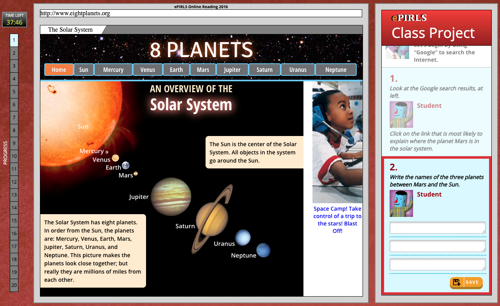

Who Clicks On Advertisements During an Online Reading Assessment?
An Analysis of ePIRLS 2016 Process Data
 Introduction
Introduction
Just like everyone else in our modern society, students around the world are increasingly able to access and consume online information both in and out of school. How well can students read online? How does their online reading literacy compare in a global context? The international assessment ePIRLS was first administered in 2016 to answer that. This innovative assessment of online reading measures how well 4th-grade students around the world read, interpret, and critique information online. The official findings have been published and the dataset made available, both of which provide policymakers with information essential to developing appropriate public policies in our age of online information.
While online reading provides new opportunities that offline reading does not, it also presents readers with new challenges, one of which is the potential for distractions (Goldstein et al., 2014). Remember that time when you were reading an article online, where half-way through, there’s an advertisement that caught your eye, and 10 minutes later, you finished purchasing whatever that was and completely forgot about the article? The designers of ePIRLS surely remember such moments, so they put advertisements in many webpages from which students are supposed to read and collect information. The hypothesis is that students working on school assignments or research projects will finish sooner if they focus on finding critical information and are not distracted (Mullis et al., 2017).
As a digitally based assessment, ePIRLS collects data on the test-taking process, including whether or not students have clicked on those advertisements. This can provide insights into the relationship between students’ performance and their testing behavior. However, little process data research has been conducted on ePIRLS or on other international large-scale assessments for that matter. In this post, I use ePIRLS data to test the hypothesis above, and to explore further how students around the world read and behave when presented with the distraction of online advertisements.
Data and Methods
Let’s first understand how the ePIRLS assessment works and where the advertisements appear in the assessment.
The ePIRLS 2016 assessment was completed by 4th-grade students in 16 education systems. (They are called education systems because there are city-level jurisdictions that participated in the assessment as "benchmarking participants.") The assessment consists of five modules of science and social studies topics, with each module lasting up to 40 minutes.
Each participating student took a randomly assigned combination of two of the five modules. Each module was structured as a class project and represented in a simulated internet environment that contains advertisements, such as the ad for space camp in the screenshot from the module "Mars" shown below.
Out of the five modules, "Mars" and "Dr. Elizabeth Blackwell" have been released online, so they can be viewed in the same way as they were presented to participating students. Below is a video walk-through (also available online) about the logistics of the assessment.
ePIRLS recorded information on how many times each student clicked on the advertisements. This information, along with students' online reading performance, is used for my analyses. All analyses follow the official instructions to account for the complex survey design of ePIRLS and use all five plausible values of the online reading achievement scale.
Findings
Let’s dive into the results, which are categorized into the following four research questions. Click on any question to jump to its section, or scroll down (recommended) to read them all.
- What are students’ advertisement-clicking patterns in each of the five modules?
- What percentage of students clicked on advertisements at least once in the assessment?
- How are students’ advertisement-clicking patterns associated with their online reading achievement?
- How are students’ advertisement-clicking patterns associated with time spent completing the assessment?
Scroll to continue
⇓
⇓
⇓
1. What are students’ advertisement-clicking patterns in each of the five modules?
In the plot to your right, you will see the range of students' ad-clicks in each module and education system.
The dots on the left are the minimum number of ad-clicks and the dots on the right are the maximum. In each module, an ePIRLS participating student clicked on advertisements as few as zero times and as many as 604 times.
Look at that outlier student in Chinese Taipei who clicked the ad in the “Rainforests” module more than 600 times!
We can also view it in percentage terms. Each bar to the right represents the percentage of students who clicked on ads in each module (regardless of how many times they have clicked) in a given education system.
The percentage of students who clicked on advertisements ranged from 2.5 percent in Sweden in the “Zebra and Wildebeest Migration” module to 19.9 percent in Abu Dhabi in the “Mars” module.
2. What percentage of students clicked on advertisements at least once in the assessment?
Each bar here represents the percentage of students who clicked on ads in the entire assessment (regardless of how many times they have clicked or in which module they have clicked) in a given education system.
Throughout the assessment, the percentage of students who clicked on advertisements at least once ranged from 6.7 percent in Sweden to 27.7 percent in Chinese Taipei. In the United States, 13.1 percent of students clicked on advertisements at least once.
To break it down by gender, the percentage of boys who clicked on advertisements ranged from 8.3 percent in Sweden to 35.7 percent in Chinese Taipei, and the percentage of girls who clicked on advertisements ranged from 5.1 percent in Sweden to 19.1 percent in Chinese Taipei. Across all education systems, the percentage of boys who clicked on advertisement was significantly higher than the percentage of girls.
3. How are students’ advertisement-clicking patterns associated with their online reading achievement?
The bars represent the average score for students who did not click on ads and for those who clicked on ads, in a given education system. And the two vertical dotted lines show that, across all participating education systems, on average, the former group of students scored 537.5 points on the ePIRLS assessment while the latter scored 502.1 points.
In all participating education systems, except in Singapore, students who clicked on ads scored significantly lower than their peers who did not click on ads. In Singapore, the gap was not significantly different from zero. The gap favoring students who did not click on advertisements ranged from 11.4 points in Norway to 89.7 points in Abu Dhabi. In the United States, the achievement gap was 20.5 points in favor of students who did not click on advertisements.
4. How are students’ advertisement-clicking patterns associated with time spent completing the assessment?
The bars represent the average time students spent on the ePIRLS assessment (from start to log-out) among students who did not click on ads and those who clicked on ads in a given education system.
In 13 of the 16 participating education systems, there was no measurable difference in time spent on the ePIRLS assessment between the two groups of students. There are three exceptions. In Italy, students who clicked on ads spent, on average, 2.8 more minutes on the assessment than their peers who did not click on ads. In the United Arab Emirates and Abu Dhabi (part of UAE), it’s the other way around.
This finding does not lend support to the hypothesis that students who are distracted tend to take more time to complete the assessment. One reason is likely that the ePIRLS assessment only tracks the action of students clicking on advertisements but never actually take them to the advertisement page (or a pop-up window) where students may spend more time being distracted. If ePIRLS would like to test out this hypothesis (which it claims to), the future design of the assessment may consider enhancing this testing feature.
Conclusions
We just did some initial exploration on how students around the world read and behave when presented with online advertisements, using the process data from ePIRLS 2016! If you reach this point and have not been distracted as some of the students were while taking the assessment, you will hopefully take away the following highlights.
- We observed some variation of students’ ad-click patterns by module and by education system.
- We observed higher proportions of boys than girls who clicked on advertisements during the assessment time.
- In most education systems, students who clicked on advertisements tended to score lower than their peers who did not click on advertisements, while they seemed to spend the same amount of time completing the assessment.
- To test out if students REALLY spend the same amount of time completing the assessment with or without the presence of advertisement, ePIRLS may need to improve its assessment design.
I hope this close look at the ePIRLS process data will encourage more analyses in the future to gain insight into students’ online reading and testing behaviors, including their advertisement-clicking patterns.
References
Goldstein, D. G., Suri, S., McAfee, R. P., Ekstrand-Abueg, M., & Diaz, F. (2014). The Economic and Cognitive Costs of Annoying Display Advertisements. Journal of Marketing Research, 51(6), 742–752. https://doi.org/10.1509/jmr.13.0439
Mullis, I. V. S., Martin, M. O., Foy, P., & Hooper, M. (2017). ePIRLS 2016 International Results in Online Informational Reading. Retrieved from Boston College, TIMSS & PIRLS International Study Center website: http://timssandpirls.bc.edu/pirls2016/international-results/
Data and Credits
This analysis uses the ePIRLS 2016 data available here. The R script for data processing and a write-up could be found here, and the code for this data story is hosted here.
This project is made possible thanks to the multitude of resources available online (tutorials for learning and implementing use D3.js, Scrollama and D3-legend, to name a few). A special shout out to Jonathan Tan, whose data story provides inspiration and the code structure for this project. Many thanks also to Marty Hooper for providing valuable feedback on methodology, Hanlun Song for never getting tired of my web development questions, and friends who I bugged for review! ❤️
This is my first attempt to use D3.js for a data story. Any feedback is highly encouraged! Feel free to reach out!